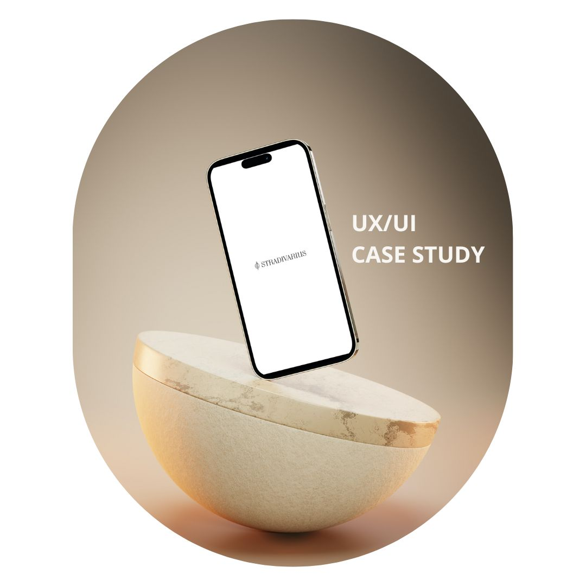

ALGUNOS DE
NUESTROS PROYECTOS
OCEAN WILD TOURS
Turismo de Los Cabos
Ocean Wild tours es una marca que se dedica al turimo en los Cabos, San Lucas, México; este proyecto tuvo una duración de aprox. 4 meses, lo que buscaba el cliente era un estilo fresco y sencillo que reflejara la esencia de los Cabos.
Para este proyecto se requirieron servicios de creación de logotipo, identidad visual, creación de mockups para la marca, catálogos de información, videos promocionales, posts y edición estética para redes sociales, sin duda para mi fue toda una aventura haber sido parte de esta oportunidad.
STRADIVARIUS
Re-diseño de Interfaz
Para mi tercer curso de la carrera, como ya había mencionado anteriormente, tuve la oportunidad de realizar un caso de estudio para una aplicación móvil: Stradivarius, esto significa conocer sus usuarios, público objetivo, metas de la marca, arreglar errores estéticos, pulir áreas de mejora y re-diseñar todo lo posible la interfaz hasta lograr ayudar a los usuarios a llegar a su objetivo dentro de la misma, en este caso: comprar.
Fue todo un reto para mi, esta tarea sería una prueba de fuego que definiría si realmente aprendí lo que necesitaba del curso pasado, me ayudó como práctica a darme cuenta de que es fácil arreglar errores y definir nuevos colores a una interfaz, pero lo realmente complicado es encontrar el significado real que desea dar la marca en particular, hablo del caso de estudio, este momento del ux en donde investigamos hasta el mas mínimo detalle de la marca, para así poder plasmar su verdadera esencia en algo que esté al alcance de todos sus usuarios, para mi fue sin duda una experiencia más que maravillosa.